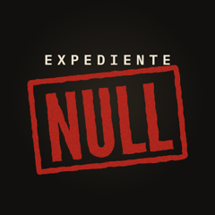

Null DossierCredits
NotPetya: the virus that asked for $300 and didn't want money
Photographs
- PetyaA.jpg — User:Jbuket · CC BY 4.0 · Wikimedia Commons
- Petya-ransom-note-optimized.png — Vordzi · CC BY-SA 4.0 · Wikimedia Commons
- TSB tools.jpg — http://securityaffairs.co/wordpress/57859/intelligence/shadow-brokers-nsa-hacking-tools.html · Public domain · Wikimedia Commons
- Russian Intelligence Services Cyber Structure.jpg — Foreign, Commonwealth & Development Office - UK Government · OGL v1.0 · Wikimedia Commons
- Maersk headquarters Copenhagen 2014 01.jpg — Julian Herzog (Website) · CC BY 4.0 · Wikimedia Commons
- Port Newark-Elizabeth Marine Terminal.jpg — Chattus · CC BY-SA 4.0 · Wikimedia Commons
- Line3174 - Shipping Containers at the terminal at Port Elizabeth, New Jersey - NOAA.jpg — Captain Albert E. Theberge, NOAA Corps (ret.) · Public domain · Wikimedia Commons
- Port of Odessa, container terminal, 2019.jpg — Zinnsoldat · CC BY-SA 4.0 · Wikimedia Commons
- Containers in the port of Odessa.jpg — Shamil Khakirov from Ukraine · CC BY-SA 2.0 · Wikimedia Commons
- Containerterminal in Tema, Ghana.jpg — SteKrueBe · CC BY-SA 3.0 · Wikimedia Commons
- Kotoka International Airport, Accra, Ghana.JPG — Rjruiziii · CC BY-SA 3.0 · Wikimedia Commons
- Part of Maidenhead town centre - geograph.org.uk - 4024700.jpg — Jeremy Bolwell · CC BY-SA 2.0 · Wikimedia Commons
- Podil neighbourhood in Kyiv, 2006.jpg — No machine-readable author provided. Sajmon~commonswiki assumed (based on copyright claims). · Public domain · Wikimedia Commons
- Oschadbank Kiev-Saksahans'koho.jpg — TheLotCarmen · CC BY-SA 3.0 · Wikimedia Commons
- Oschadbank terminal.JPG — TheLotCarmen · CC BY-SA 4.0 · Wikimedia Commons
- TNT World Truck.jpg — Michael Trolove · CC BY-SA 2.0 · Wikimedia Commons
- The worlds largest container ship Edith Maersk... and a tugboat. (7757045006).jpg — Maersk Line · CC BY-SA 2.0 · Wikimedia Commons
- Container stack on Edith Maersk (7098374635).jpg — Maersk Line · CC BY-SA 2.0 · Wikimedia Commons
- Almost there. A Maersk Line container vessel approaching the terminal quay (8234584804).jpg — Maersk Line · CC BY-SA 2.0 · Wikimedia Commons
- Cartel «Wanted by the FBI»: seis oficiales del GRU acusados (oct. 2020) — FBI (dominio público) · Material del caso (cita) · source
- Comunicado de la Casa Blanca, 15-2-2018 — Casa Blanca (dominio público) · Material del caso (cita) · source
- Entrada de Kaspersky, 28-6-2017: ExPetr/Petya/NotPetya is a Wiper, Not Ransomware — Securelist (Kaspersky) · Material del caso (cita) · source
- Aviso de Posteo, 2017 — Posteo · Material del caso (cita) · source
- Entrada de Cisco Talos, The MeDoc Connection, 5-7-2017 — Cisco Talos · Material del caso (cita) · source
- Análisis de ESET de la puerta trasera, 4-7-2017 — ESET WeLiveSecurity · Material del caso (cita) · source
- Web de MeDoc, 2017 — Wayback Machine · Material del caso (cita) · source
- Comunicado del Foreign Office, 15-2-2018 — Gobierno del Reino Unido (OGL) · Material del caso (cita) · source
- Boletín MS17-010 de Microsoft, 14-3-2017 — Microsoft · Material del caso (cita) · source
- Repositorio de Mimikatz, de Benjamin Delpy — GitHub · Material del caso (cita) · source
- Alerta de EE. UU. sobre el ataque a la red eléctrica ucraniana — CISA (dominio público) · Material del caso (cita) · source
- Alerta de EE. UU. sobre Petya, julio de 2017 — CISA (dominio público) · Material del caso (cita) · source
- Noticia de TheJournal.ie sobre Chernóbil, junio de 2017 — TheJournal.ie (Wayback) · Material del caso (cita) · source
- Comunicado del Departamento de Justicia, 19-10-2020 — DOJ (dominio público) · Material del caso (cita) · source
- Recompensa de 10 M$, abril de 2022 — The Record · Material del caso (cita) · source
- Acuerdo Mondelez-Zurich, noviembre de 2022 — The Record · Material del caso (cita) · source
- Sentencia de apelación de Nueva Jersey, mayo de 2023 — Insurance Journal · Material del caso (cita) · source
- Noticia del 27-6-2017 sobre la red del Gobierno ucraniano — Reuters / Kyiv Post · Material del caso (cita) · source
- Boletín Y5381 de Lloyd's — Lloyd's · Material del caso (cita) · source
- Acusación del gran jurado de Pittsburgh, portada — Departamento de Justicia (dominio público) · Material del caso (cita) · source
- Aviso del NCSC británico, febrero de 2018 — NCSC (OGL), Wayback · Material del caso (cita) · source
- Entrada de Microsoft del 27-6-2017 — Microsoft · Material del caso (cita) · source
- Entrada de Matt Suiche, 28-6-2017 — Comae (Wayback) · Material del caso (cita) · source
- Reportaje de Andy Greenberg en Wired, agosto de 2018 — Wired (Wayback) · Material del caso (cita) · source
- Entrada de Cisco Talos sobre el ataque, 27-6-2017 — Cisco Talos · Material del caso (cita) · source
- Merck, formulario 10-Q del tercer trimestre de 2017 — SEC EDGAR (dominio público) · Material del caso (cita) · source
- Maersk informa de 300 M$ de pérdidas, agosto de 2017 — Threatpost · Material del caso (cita) · source
- NotPetya costó hasta 300 M$, según Maersk — Computer Weekly (Wayback) · Material del caso (cita) · source
- Kuantan Port Container Yard with Rubber Tyre Gantry.JPG — Original uploader; Only Truth at en.Wikipedia · CC BY-SA 3.0 · Wikimedia Commons
- Kuantan Port Container Yard with Rubber Tyre Gantry (View 1).JPG — Original uploader; Only Truth at en.Wikipedia · CC BY-SA 3.0 · Wikimedia Commons
- Kalmar Container Gantry Crane.jpg — Parttimephotographer · CC BY-SA 4.0 · Wikimedia Commons
- National Security Agency headquarters, Fort Meade, Maryland.jpg — National Security Agency · Public domain · Wikimedia Commons
- National Security Agency, 2013.jpg — Trevor Paglen · CC0 · Wikimedia Commons
- Freewheelin pin pad (5055081370).jpg — Aranami from Arvada, CO, US · CC BY 2.0 · Wikimedia Commons
- Toshiba 1 TB External USB Hard Drive.jpg — Editor182 (talk) · Public domain · Wikimedia Commons
- Saint-Gobain buildings Worcester MA.jpg — Tim Pierce · CC BY-SA 4.0 · Wikimedia Commons
- Acusación del gran jurado, los acusados — Departamento de Justicia (dominio público) · Material del caso (cita) · source
- Acusación del gran jurado, página 12 — Departamento de Justicia (dominio público) · Material del caso (cita) · source
- Acusación del gran jurado, página 16 — Departamento de Justicia (dominio público) · Material del caso (cita) · source
- Acusación del gran jurado, página 18 — Departamento de Justicia (dominio público) · Material del caso (cita) · source
- Boletín Y5381 de Lloyd's, requisitos — Lloyd's · Material del caso (cita) · source
- Acusación del gran jurado, página 17 — Departamento de Justicia (dominio público) · Material del caso (cita) · source
- Acusación del gran jurado, página 19 — Departamento de Justicia (dominio público) · Material del caso (cita) · source
- Virus Bulletin sobre EternalBlue, jun 2018 — Virus Bulletin · Material del caso (cita) · source
- Maersk tuvo que reinstalar todo tras NotPetya, ene 2018 — iTnews · Material del caso (cita) · source
- Axios: la Casa Blanca confirma NotPetya, 15 feb 2018 — Axios · Material del caso (cita) · source
- Noticia de SecurityWeek sobre lo que contó el presidente de Maersk en Davos — SecurityWeek · Material del caso (cita) · source


.jpg){kind=link}
.jpg){kind=link}
.jpg){kind=link}

.JPG){kind=link}


.jpg){kind=link}


Footage
- cipnt · Licencia de Pixabay · Pixabay
- cipnt · Licencia de Pixabay · Pixabay
- 2427999 · Licencia de Pixabay · Pixabay
- thenickmurphy · Licencia de Pixabay · Pixabay
- Natures_Embrace · Licencia de Pixabay · Pixabay
- luongleddata · Licencia de Pixabay · Pixabay
- DespiertaYa · Licencia de Pixabay · Pixabay
- Coverr-Free-Footage · Licencia de Pixabay · Pixabay
Satellite
- Sentinel-2 cloudless – https://s2maps.eu by EOX IT Services GmbH (Contains modified Copernicus Sentinel data 2016) · CC BY 4.0
Music
- "CAVERNS" · Density & Time · Biblioteca de audio de YouTube
- "Fog Mist" · TrackTribe · Biblioteca de audio de YouTube
- "Scanner" · Houses of Heaven · Biblioteca de audio de YouTube
- "Lurks" · ELPHNT · Biblioteca de audio de YouTube
- "Take the Hill" · The Whole Other · Biblioteca de audio de YouTube
- "David's Dream" · Houses of Heaven · Biblioteca de audio de YouTube
- "False Vacuum Decay" · The Grey Room / Density & Time · Biblioteca de audio de YouTube
- "EBB" · Density & Time · Biblioteca de audio de YouTube